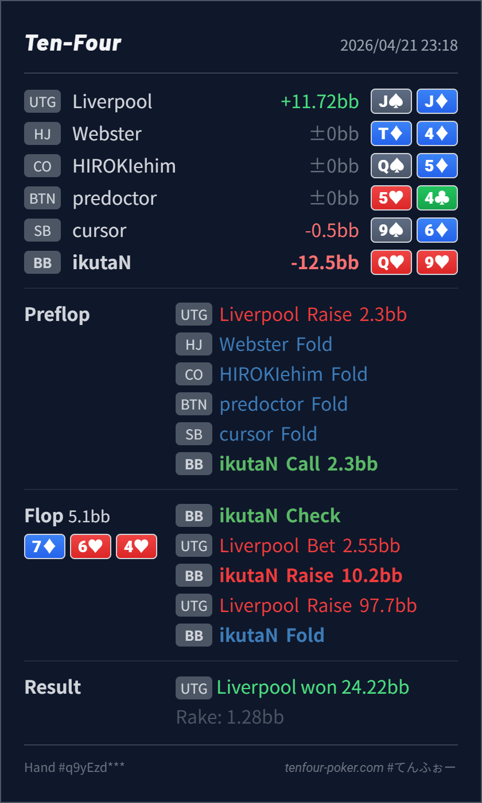

Preflop
自然Q♥9♥ は BB defend の自然な suited hand で、fold するには少しもったいない帯です。
主論点は、UTG open を BB で defend した Q♥9♥ を 7♦ 6♥ 4♥ で check-raise に回したあと、4bet jam にどこまで続けるかです。結論は、preflop defend も flop x/r も自然で、いちばん見直したいのは jam に対する fold です。Q♥9♥ は open-ended straight draw + flush draw の強い semibluff で、AA-KK-QQ-JJ の no-heart overpair 群まで入る jam range には十分戦えます。この combo を x/r に使うなら、かなり continue 寄りで扱いたいです。
Q♥9♥J♠J♦7♦ 6♥ 4♥Q♥9♥ を x/r したあとに jam へ fold したところです。7♦ 6♥ 4♥ は UTG に overpair、set、A♥K♥/A♥Q♥ 系が残る一方、BB に set、two pair、straight、強い draw が多く、BB 側が check-raise を持ちやすい board です。Q♥9♥ は OESD + queen-high flush draw で、BB の semibluff の中でもかなり上側です。showdown value は低い一方、押し返されたときの raw equity は高く、x/r の材料がそろっています。43% です。AA-KK-QQ-JJ の no-heart overpair に対しては十分届きやすく、set や nut-heart を少し含めても、この combo は x/r range の continue 側に残したい帯です。UTG の jam は set と nut-heart にかなり寄る という強い read で fold を選ぶなら、最初から Q♥9♥ を x/r より check-call に寄せる方が line 全体は一貫します。Q♥9♥J♠J♦2.3BB, BB call7♦ 6♥ 4♥2.55BB, BB raise 10.2BB, UTG raise 97.7BB, BB foldJ♠J♦ wins
自然Q♥9♥ は BB defend の自然な suited hand で、fold するには少しもったいない帯です。
7♦ 6♥ 4♥x/r は良いが jam fold は降りすぎQ♥9♥ は OESD + flush draw の強い semibluff で、BB の x/r range の中でも continue 側に寄る combo です。
| 論点 | その場で起きがちな見え方 | どこがズレたか | 次回の基準 |
|---|---|---|---|
| strong draw で x/r した後の jam 対応 | UTG open からの all-in はかなり強く見え、draw では足りないと感じやすい | Q♥9♥ はただの flush draw ではなく、OESD まで付いた強い combo draw です。必要 equity は高すぎず、no-heart overpair が残るだけで continue しやすい帯に入ります。ここを fold しすぎると、x/r range が value 寄りに傾きます。 | strong draw を x/r に使うときは、先に jam が来ても続ける combo か を確認する。Q♥9♥ 級は fold 側ではなく continue 側に置きたい |
| raise bucket の作り方 | 強い draw を引いたので、とりあえず前向きに raise したくなる | raise 自体は良いですが、raise する理由 と 返されたときの処理 を切り離すと line がぶれます。stack-off まで見ないなら、同じ強い draw でも check-call で十分 equity を実現できる spot があります。 | x/r を選ぶ前に、fold equity を取りたいから raise なのか、stack-off まで受け入れる強さだから raise なのかをセットで決める |
| ストリート | その時点の見え方 | 実ハンドの位置づけ | 評価 | その場の一手 |
|---|---|---|---|---|
| Preflop | UTG open range は 88+, AQ+, suited broadway を中心に比較的強めです。BB 側は suited connector、suited broadway、低い pair を広く defend できます。 | Q♥9♥ は BB defend の自然な suited hand で、fold するには少しもったいない帯です。 | 自然 | call で問題ありません。特に suited で playability が高いので defend しやすいです。 |
Flop 7♦ 6♥ 4♥ | UTG の c-bet range には overpair、set、一部 A♥K♥/A♥Q♥、8♥8x のような strong continue が残ります。一方で BB には set、two pair、85s、heart combo draw があり、x/r の根拠を持ちやすい board です。 | Q♥9♥ は OESD + flush draw の強い semibluff で、BB の x/r range の中でも continue 側に寄る combo です。 | x/r は良いが jam fold は降りすぎ | x/r 自体はかなり自然です。この combo なら、jam に対しても call 寄りで整理したいです。 |
| Turn | ||||
| River |
raise が通らなかった後も続ける前提か を先に決めると line がぶれにくいです。draw だから怖い ではなく、必要 equity に対してどこまで raw equity があるか を見ると、jam 対応の精度が上がります。AA-KK-QQ-JJ を守るつもりで jam まで進めることがあり、その分だけ Q♥9♥ の continue は後押しされます。set + nut-heart 以外をほぼ積まない相手なら exploit 的に fold も出ますが、その場合は最初の x/r 頻度自体を下げた方が整います。